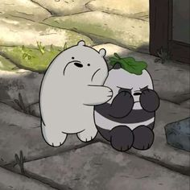
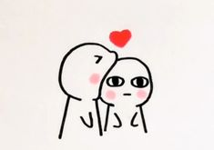

So this is made by MEW (me)ofc, but why? because I love her and want to make sure why and what I love about her(thats because I got a project but aniwayy).Now basically its all about her(her?you ofc) {I didn't learn much by now and it may be not as beautiful as I wanted it to look like but wateva you gotta bare it anyway. This page will be separated into points which will obviously contain about you.This may look so weird and cringey but I was fucking excited to create this so don't you dare to complain about it but yeah if possible give me your feedback👽(only good thing bitch)Enough of introwducson now lets get going from here(togedar💗 lmao)}
|  |
First Sight(uk ik):OFC I first saw on the first day of college, I even told you about it sooo many times but ngl that is real precious in my treasured memory of us haha. Let me say it again one more time!! (DO NOT GET BORED OR SKIP A SINGLE LINE I'LL FUCKING GET UPSET as I can't beat you lol) so that was 8 JUNE 2023(a pretty memorable date now) I saw you right after I entered the class you were sitting with someone and I was sure that I'll sit at back benches so I headed there I was really annoyed but not because of you ofc. Then the class started and we had to give our intro I still remember you wearing a yellow kurti(I AIN'T WEIRD) and with a pony tail ig ANIWAII I suddenly was all ears the moment it was your bench's turn and I ain't lyinng. I found you pretty rude and cool lol, then the next day when you had convo with that English ma'am I was sure that this bitch is cool af I wanted to interact with you too but but imma introverted ass so I didn't then the days passed and because of that first bencher I talked with you and then we exchanged insta ID's and numbers and the rest is a beautiful shit that I will remember for a real long time. |
As we talk about Taekook ship you are same like Kookie to Tae✨, you are the lottery which I won (side effects of watching reels) you are the Moon to my starry night sky(quite poetic 🤡), you are the sea which I love lol you are the paint to my canvas (dayum that was good lol), you are like the song which I want to inject in my veins and listen every time(lemo) you are like the oxygen I need to survive(omaigawd does that me I breath you💀) (lyrics always helps) not to forget you really are the one who I dream of every fuckinng day, you be the one who I want when I go through worst wdym I ignore you when my mood is fucked up? and here is me who keeps getting better because of you. It's true that I'm way too obsessed with you like a drug and that's quite dangerous too but who gives a fuck? not me atleast, I crave for you and be the happiest even if I get a glimpse of you hehe. Bored? idgaf let's continue(?) yos.
|  |
I just LOVE THE WAY YOU ARE.I never lie when I say I love you with your flaws and fawns, and hell yes you are the most perfect girl I have ever met and will always be the one.I do admire you with each way of yours.There is absoluetly nothing which I hate about you (can be dislike but not hate LMAO) I may not talk with you when we argue or sommething but that never means I don't think about you haha.And I love it even when you be yourself I may look like a kind sometime but lol I do get you and even if I don't I'll make sure to think from your pov I always do but never tell you(fak I did now 🚶🏻♀️)come on bitch you may think I get annoyed by you but that never stops me to fall for you more each time😌 So in short I admire and absoluetly love everything about you!! (good so far? I mean I DIDN'T LEARN HOW TO ADD ANIMATIONS OR STUFFS SO IT'S ALL SIMPLE BUT YOU GOT TO BARE IT AS I SAID!!HAHAHA!!!) (Don't fucking tell me you got bored I'll hate you, haha not gonna happen) |
That's not even a question huh. I love you because YOU ARE THE WAY YOU ARE BAHAHAHAHAHA
Dayum bro you reached the last point finally! This shit ain't different from what I've said or typed before but as you are special there should have a special note so here it is!! First thing I know this shit is childish andd a bit boring too but I loved it, it was fun to create this even if this has nothing much lol who knows I may create another one if I become better at this haha, and the important thing!!! I do give the cold vibe and those dry replies because I be done with myself and idk what but ig it's ok sometimes like bitch I don't treat you like that every time and know that I'll make sure to not give up on you or anything and YOU GOT TO DO THE SAME, I DON'T EVEN CARE IF YOU BE IN A BAD MOOD you will have to get the shit together and come back because I'll be waiting for you as I always do! I do remember many moments ehich arre special to me and will always be now that says that I remember things not everything but yeah. You've got me, the whole me so don't give up on this shit lol, and and ik I have always said these things but a reminder don't harm your ass so keep it😋 YANDD IM PROUD OF YOU FOR EVERYTHING BAHAHAHA!!!!!!!!(and just like that you've come to an end fak off, I'm coming too haha)